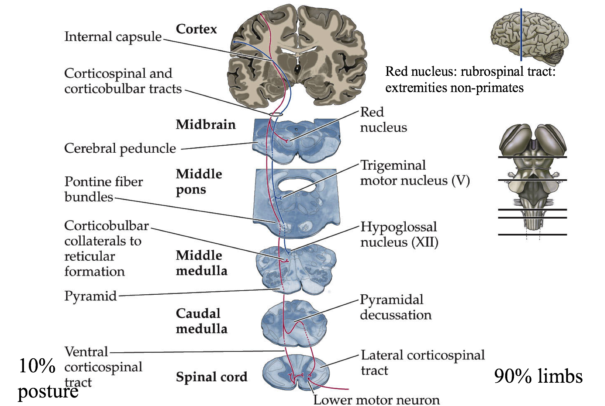
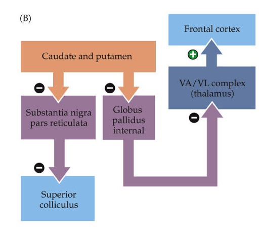
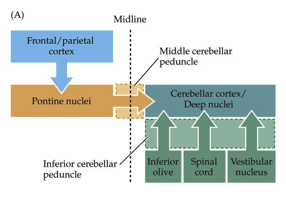
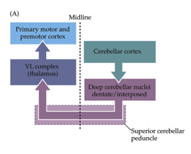
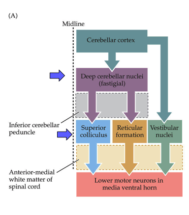
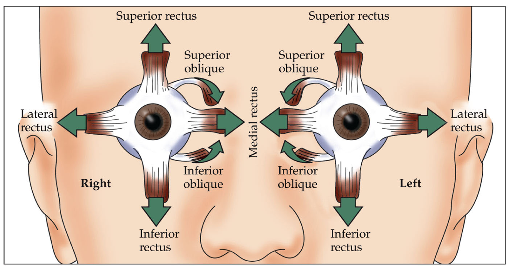
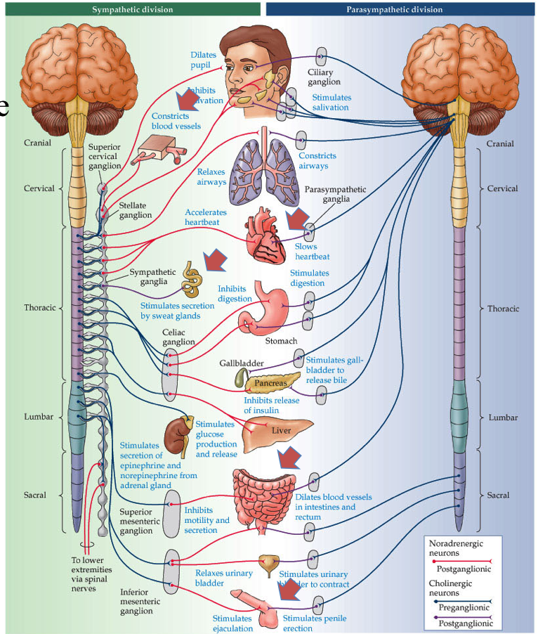

7.6. motor system¶
notes from Neuroscience, 5th edition + Intro to neurobiology course at UVA
7.6.1. 16 lower¶
sensory in dorsal spinal cord, motor in ventral
farther out neurons control farther out body parts (medial=trunk, lateral=arms,legs)
one motor neuron (MN) innervates multiple fibers
the more fibers/neuron, the less precise
MN pool - group of MNs=motor units
muscle tone = all your muscles are a little on, kind of like turning on the car engine and when you want to, you can move forward
more firing = more contraction
MN types
fast fatiguable - white muscle
fast fatigue-resistant
slow - red muscles, make atp
muscles are innervated by a proportion of these MNs
reflex
whenever you get positive signal on one side, also get negative on other
flexor - curl in (bicep)
extensor - extend (tricep)
proprioceptors (+) - measure length - more you stretch, more firing of alpha MN to contract
intrafusal muscle=spindle - stretches the proprioceptor so that it can measure even when muscle is already stretched
\(\gamma\) motor neuron - adjusts intrafusal muscles until they are just right
keeps muscles tight so you know how much muscle is streteched
if alpha fires a lot, gamma will increase as well
high gamma allows for fast responsiveness - brainstem modulators (serotonin) also do this
opposes muscle stretch to keep it fixed
spindle -> activates muscles -> contracts -> turns off
sensory neurons / gamma MNs innervate muscle spindle
homonymous MNs go into same muscle, antagonistic muscle pushes other way
golgi tendon (-) measures pressure not stretch
safety switch
inhibits homonymous neuron so you don’t rip muscle off
ALS = Lou Gehrig’s disease
MNs are degenerating - reflexes don’t work
progressive loss of \(\alpha\) MNs
last neuron to go is superior rectus muscle -> people use eyes to talk with tracker
CPG = central pattern generator
ex. step on pin, lift up leg
walking works even if you cut cat’s spinal cord
collection of interneurons
7.6.2. 17 upper¶



cAMP is used by GPCR
lift and hold circuit
ctx->lateral white matter->lateral ventral horn->limb muscles
lateral white matter - most sensitive to injury
brainstem->medial white matter->medial horn->trunk
medial white matter -> goes into trunk
bulbarspinal tracts
lateral and medial vestibulospinal tracts - feedback
automated system - not much thinking
posture - reflex
too slow for learning surfing
reticular - feedforward = anticipate things before they happen
command / control system for trunk muscles (posture)
feedforward - not a reflex, lean back before opening drawer
caudal pontine - feeds into spinal cord
colliculospinal tract
has superior colliculus - eye muscles, neck-looking
see ch. 20 - reflex
corticular bulbar tract (premotor->primary motor->brainstem)
motor cortexes - this info is descending
can override reticular reflexes in reticular formation
premotor cortex (P2) - contains all actions you can do
has mirror neurons that fire ahead of primary neurons
fire if you think about it or if you do it
primary motor cortex (P1)
layer 1 ascending
layer 4 input
layer 5 - Betz cells - behave like 6 (output)
layer 6 - descending output
has map like S1 does
Jacksonian march get seizure that goes from feet to face (usually one side)
epileptic seizure - neurons fire too much and fire neurons near them
insular - flashes of moods
pyriform - flashes of smells
Betz cells - if they fire, you will do something
dictate a goal, not single neuron to fire
axons to ventral horn of spinal cord
lesions
upper
spasticity - unorganized leg motions
increased tone - tight muscles
hyperactive deep reflexes
ex. babinski’s sign
curl foot down a lot because you don’t know how much to curl
curling foot down = normal plantar
more serotonin can cause this
lower
hypoactive deep reflexes
decreased tone
severe muscle atrophy
pathways
Betz cell
90% cross midline in brainstem - control limbs
10% don’t cross - trunk muscles
7.6.3. 18 basal ganglia (choose what you want to do)¶



“who you are”
outputs
brainstem
motor cortex
4 loops (last 2 aren’t really covered)
motor loops
body movement loop
SnC -> S (CP) -> (-) Gp -> (-) VA/VL -> motor cortex
oculomotor loop
cortex -> caudate -> substantia nigra pars reticulata -> superior colliculus
non-motor loops 3. prefrontal loop - daydreaming (higher-order function)
spiny neurons corresponding to a silly idea (alien coming after you) filtered out because not fired enough
schizophrenia - can’t filter that out
limbic loop - mood
has nucleus accumbens
can make mood better with dopamine
substantia nigra
pars compacta - dopaminergic neurons (input to striatum)
more dopamine = more strength between cortical pyramidal neurons and spiny neurons (turns up the gain)
dopamine helps activate a spiny neuron
may be the ones that learn (positive outcome is saved, will result in more dopamine later)
Parkinson’s - specific loss of dopaminergic neurons
dopaminergic neurons form melanin = dark color
when you get down to 20% what you were born with
know what they need to do - don’t have enough dopamine to act
treat with L Dopa -> something like dopamine -> take out globus pallidus
cocaine, amphetamine - too much dopamine
Huntington’s - death of specific class of spiny neurons
have uncontrolled actions
Tourette’s - too much dopamine
also alcohol
MPPP (synthetic heroin)
MPTP looks like dopamine but turns into MPP and kills dopaminergic neurons
treated with L Dopa to reactivate spiny neurons
pars reticulata
doesn’t have dopamine (output from striatum)
striatum contains spiny neurons
caudate (for vision) - output to globus pallidus and substantia nigra (pars reticulata)
putamen - output only to globus pallidus
each spiny neuron gets input from ~1000 cortical pyramidal cells
globus pallidus
each spiny neuron connects to one globus pallidus neuron
deja vu - spiny neuron you haven’t fired in a while
VA/VL (thalamus)
all motor actions must go through here before cortex
has series of commands of all actions you can do
has parallel set of betz cells that will illicit those actions
VA/VL is always firing, globus pallidus inhibits it (tonic connection)
7.6.4. 19 cerebellum (fine tuning all your motion)¶





redundant system - cortex could do all of this, but would be slow
repeated circuit - interesting for neuroscientists
all info comes in, gets processed and goes back out
cerebellum gets motor efferant copy
all structures on your brain that do processing send out efferent
cerebellum sends efferant copy back to itself with time delay (through inferior olive)
cerebrocerebellum
deals with premotor cortex (mostly motor cortex)
spinocerebellum = clarke’s nucleus, knows stretch of every muscle, many proprioceptors go straight into here
motor cortex
has a map of muscles
vestibular cerebellum - vestibular->cerebellum->vestibular
vestibular system leans you back but if wind blows, have to adjust to that
input
pontine nuclei (from cortex)
vestibular nuclei (balance)
cuneate nucleus (somatosensory from spinal upper body)
clarke (proprio from spinal lower body)
processing
cerebellar deep nuclei
output
deep cerebellar nuclei
go to superior colliculus, reticular formation
VA/VL (thalamus) - back to cortex
red nucleus
circuit 1 - fine-tuning
circuit 2 - detects differences, adjusts
cerebellum -> red nucleus (is an efferant copy) -> inferior olive -> cerebellum
compare new copy to old copy
cells
purkinje cells - huge number of dendrite branches - dead planar allows good imaging
GABAergic
(input) mossy fibers -(+)> granule cells (send parallel fibers) -(+)> purkinje cell -(-)> deep cerebellar nuclei (output)
mossy->granule->parallel fibers connect to ~100,000 parallel fibers
climbing fiber - comes from inferior olive and goes back to purkinje cell (this is the efferent copy) = training signal
loops
deep excitatory loop (climbing/mossy) -(+)-> deep cerebellar nuclei
cortical inhibitory loop (climbing/granule) -(+)-> purkinje
the negative is from purkinje to deep cerebellar nuclei
alcohol
can create gaps = folia
long-term use causes degeneration = ataxia (lack of coordination)
7.6.5. 20 eye movements/integration¶


Broca’s view - look at people with problems
Ramon y Cajal - look at circuits
5 kinds of eye movements
saccades
use cortex, superior colliculus (visual info -> LGN -> cortex, 10% goes to brainstem)
constantly moving eyes around (fovea)
~scan at 30 Hz
5 Hz=200 ms for cortex to process so pause eyes (get 5-6 images)
there is a little bit of drift
can’t control this
humans are better than other animals at seeing things that aren’t moving
VOR - vestibular ocular reflex - keeps eyes still
use vestibular system, occurs in comatose
fast
works better if you move your head fast
optokinetic system - tracks with eyes
ex. stick head out window of car and track objects as they go by
slower than VOR (takes 200 ms)
works better if slower
reflex
in cortex (textbooks) but probs brainstem (new)
smooth pursuit - can track things moving very fast
suppress saccades and track smoothly
only in higher apes
area MT is highest area of motion coding and goes up and comes down multiple ways
high speed processing isn’t understood
could be retina processing
vergence - crossing your eyes
suppresses conjugate eye movements
we can control this
only humans - bring objects up very close
reading uses this
eye muscles
rectus
vertical
superior
inferior
use complicated vertical gaze center
last to degenerate in ALS
locked-in syndrome - can only move eyes vertically
controls oculomotor nucleus
lateral
medial
lateral (controlled by abducens)
use horizontal gaze center=PPRF which talk to abducens -MLF connects abducents to opposite medial lateral rectus muscle
oblique - more circular motions
superior (controlled by trochlear nucleus)
inferior
everything else controlled by oculomotor nucleus
superior colliculus has visual map
controls saccades, connects to gaze centers
takes input from basal ganglia (oculomotor loop)
also gets audio input from inferior colliculus (hear someone behind you and turn)
gets strokes
redundant with frontal eye field in secondary motor cortex
connects to superior colliculus, gaze center, and comes back
if you lose one of these, the other will replace it
if you lose both, can’t saccade to that side
7.6.6. 21 visceral (how you control organs, stress levels, etc.)¶



parasympathetic works against sympathetic
divisions
sympathetic - fight-or-flight (adrenaline)
functions
neurons to smooth muscle
pupils dilate
increases heart rate
turn off digestive system
2 things with no parasympathetic counterpart
increase BP
sweat glands
location
neurons in spinal cord lateral horn
send out neurons to sympathetic trunk (along the spinal cord)
all outgoing connections are adrenergic
beta-adrenergic drugs block adrenaline
beta agonist - activates adrenaline receptors (do this before EKG)
parasympathetic - relaxing (ACh)
location
brainstem
edinger westphal nucleus - pupil-constriction
salivatory nucleus
vagus nucleus - digestive system, sexual function
nucleus ambiguous - heart
nucleus of the solitary tract - all input/output goes through this 1. rostral part (front) - taste neurons 2. caudal part (back) contains all sensory information of viscera (ex. BP, heart rate, sexual
sacral spinal cord (bottom) - gut/bladder/genitals
not parallel to sympathetic – poor design - may cause stress-associated diseases
hard to make drugs with ACh
enteric nervous system - in your gut
takes input through vagus nerve from vagus nucleus
also has sensory neurons and sends afferents back to brainstem
pathway
insular cortex - what you care about
amygdala - contains emotional memories
hypothalamus - controls a lot
mostly peptinergin neurons
aging, digestion, mood, straight to bloodstream & CNS
releases hormones
ex. leptin - stops you eating when you eat calories
reticular formation - feedforward, prepares digestion before we eat
three examples
heart rate
starts at nucleus ambiguous
also takes input from chemoreceptors (ex. pH)
SA node at heart generates heartbeat - balances Ach and adrenaline
sympathetic sends info from thoracic spinal cord
heart sends back baroreceptor afferents
bladder function
parasympathetic in sacral lateral horn make you pee (contracts bladder)
turn off sympathetic NS
open sphincter muscle (voluntary)
can also control this via skeletal nervous system
circuit
amygdala (can’t pee when nervous)
pontine micturation center -> parasympathetic preganglionic neurons -> parasympathetic ganglionic neurons
inhibitory local circuit neurons -> somatic MNs
sexual function
Viagra turns on parasympathetic NS
also gives temporal color blindness
sympathetic involved in ejaculation
temporal correlation (“Point and Shoot”)